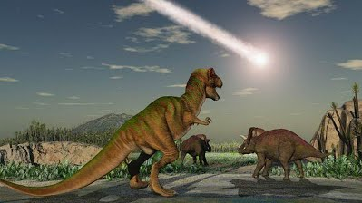

การกำเนิดไดโนเสาร์
The Beginning of Dinosaur
ไดโนเสาร์ถือกำเนิดขึ้นบนโลกใบนี้เมื่อราวๆ 230 ล้านปีก่อน หลังจากการหมดสิ้นยุคเพอร์เมี่ยนราวๆ 20 ล้าน สัตว์โบราณล้มตายลงจากการปรับตัวไม่ทันต่อธรรมชาติ และถูกแทนที่โดยสัตว์เลื้อยคลายจำพวกจระเข้ที่วิวัฒนาการเป็นไดโนเสาร์ “สัตว์โลกล้านปียักษ์” ปกครองแผ่นดินตั้งแต่ยุคไทรแอสสิก ยุคจูราสสิค และสูญพันธ์ไปหมดสิ้นในยุคครีเทเซียส
ไดโนเสาร์แม้จะสูญพันธุ์ไปมากกว่า 70 ล้านปีแล้ว แต่เราก็ปฏิเสธไม่ได้ว่าเราไม่รู้จักไดโนเสาร์ โครงกระดูกที่ค้นพบ และหลักฐานทางวิทยาศาสตร์มากมายทำให้มนุษย์สามารถปะติดปะต่อประวัติศาสตร์ของสัตว์โลกกลุ่มนี้ได้ ไดโนเสาร์ถูกค้นพบมามากกว่าพันปี แต่ในเวลานั้นไม่มีใครในโลกสามารถจำกัดความได้ หรือคิดด้วยหลักเหตุผลว่าซากฟอสซิลเหล่านั้นเป็นของสัตว์ชนิดใด ในเมืองจีนมองว่าเป็นโครงกระดูกของมังกรบ้าง ในหลายๆประเทศที่ขุดพบกว่ามีความเชื่อที่แตกต่างกันไป จน อีกัวโนดอน (Iguanodon) และ เมกาโลซอรัส (Megalosaurus) ไดโนเสาร์ 2 ตัวแรกที่ถูกค้นพบ ทำให้นักวิทยาศาสตร์ และนักโบราณคดีต้องการค้นคว้าถึงต้นตอสายพันธุ์ของพวกมันเหล่านี้ การขุดหาซากดึกดำบรรพ์ของกิ้งก่ายักษ์พวกนี้ก็เริ่มเป็นที่นิยมมากขึ้นในประเทศอเมริกา และยุโรป นับตั้งแต่ปี ค.ศ. 1822 จนถึงปัจจุบัน โลกใบนี้มีการค้นพบไดโนเสาร์ และตั้งชื่อไปมากกว่า 1,000 ชนิด และยังค้นพบชนิดใหม่รู้เรื่อยๆ โดยไดโนเสาร์นั้นอาศัยอยู่ในช่วงมหายุค เมโสโซอิก (Mesaozoic) ประกอบด้วยยุคย่อย 3 ยุค
หน้าแรก ถัดไป